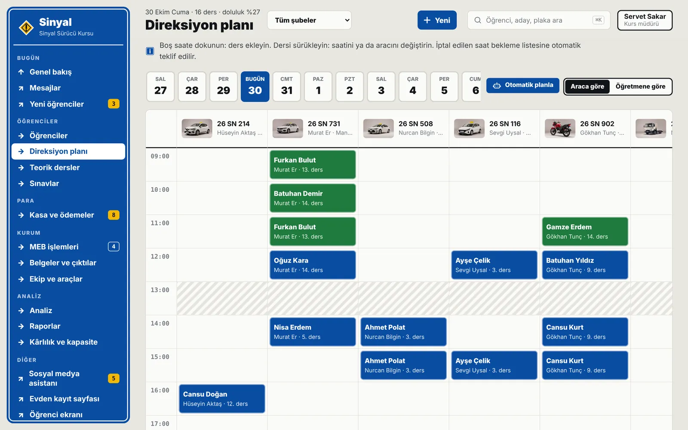

Plan kendini düzenler
Araç ve öğretmen çakışmaları kontrol edilir; boş saatler tek tuşla öğrencilere dağıtılır.
Sürücü kursu otomasyonu
Öğrenci kaydı, direksiyon planı, ödeme, sınav ve MEB işleri tek yerde. Hatırlatmalar WhatsApp’tan kendiliğinden gider.
Kurulum gerekmez · Telefonda ve bilgisayarda çalışır · Demo için giriş yok

Araç ve öğretmen çakışmaları kontrol edilir; boş saatler tek tuşla öğrencilere dağıtılır.
Ders, taksit ve sınav hatırlatmaları gider; öğrencinin attığı evrak dosyasına düşer.
Resmî formlar dolu gelir; ay sonunda müşavirinize tek Excel dosyası gider.
Öğrenci uygulaması
Kayıtta giriş bilgisi WhatsApp’tan gider. Ders saatleri, ödeme, sınav ve 1.949 soruluk sınav hazırlığı tek yerde.
Demo örnek bir kursla açılır; hiçbir mesaj kimseye gitmez.